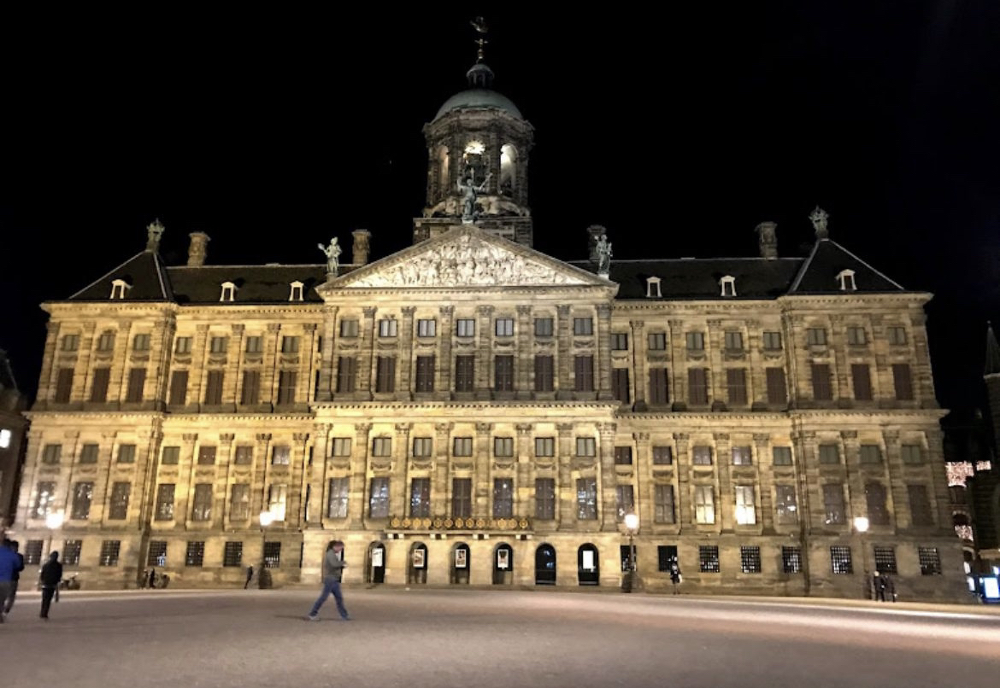

Holland, known for its tulip fields, windmills, and flat landscapes, encompasses Amsterdam, a city famed for its historic canals,
cultural museums like the Rijksmuseum and Van Gogh Museum, and vibrant nightlife. Amsterdam's charm lies in its picturesque waterways lined with narrow houses,
bustling markets, and a welcoming atmosphere for cyclists. Overall, Holland and its capital, Amsterdam, offer a delightful blend of cultural richness and scenic beauty,
making it a popular destination for travelers worldwide.